Auto-Simulacrum
[2020]
Auto-Simulacrum tests a workflow for computationally generating 3D models and perspectival renderings of geographic-scale landscapes. The goal was to use off-the-shelf tools of the landscape architecture profession and free, publicly available data from the U.S. federal government to render large landscapes. This project was supported by the Harvard University Graduate School of Design through the Irving Innovation Fellowship. Read the Journal of Digital Landscape Architecture peer-reviewed article here.
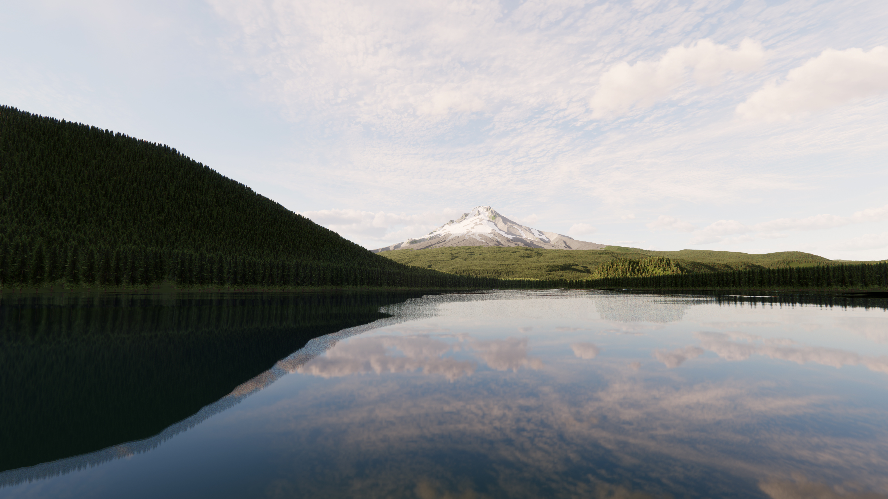
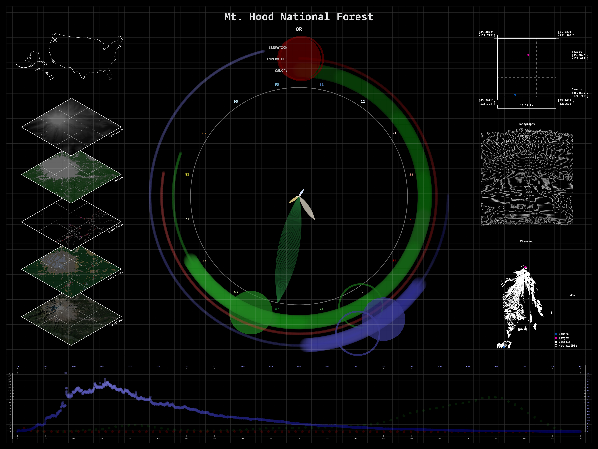
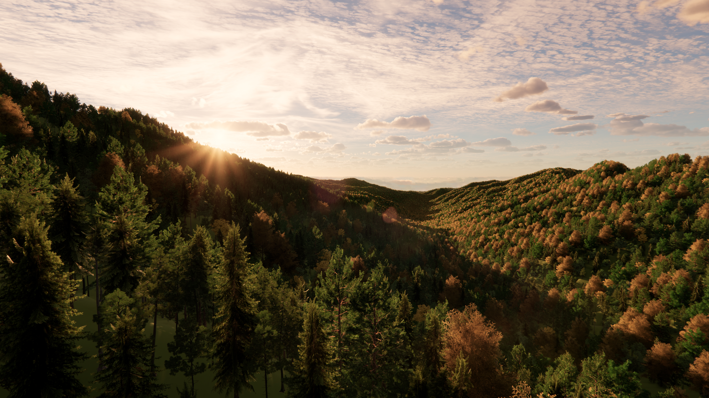
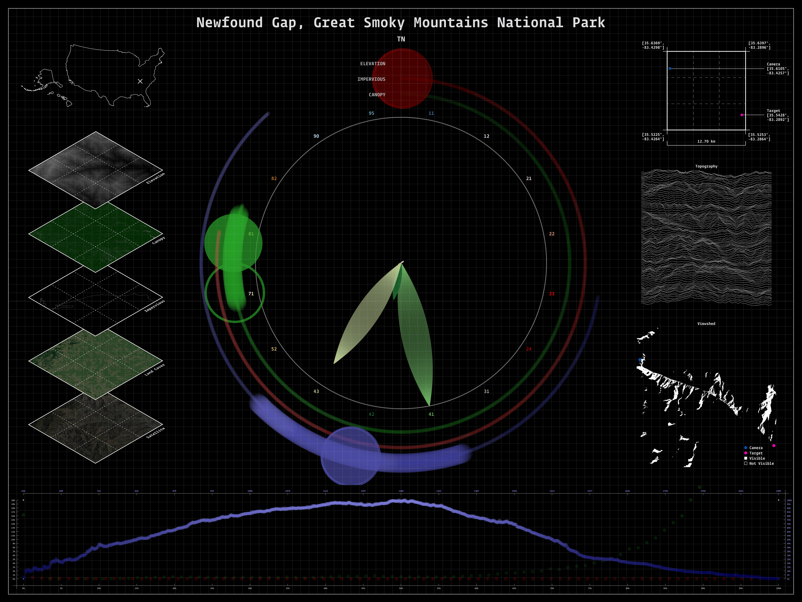
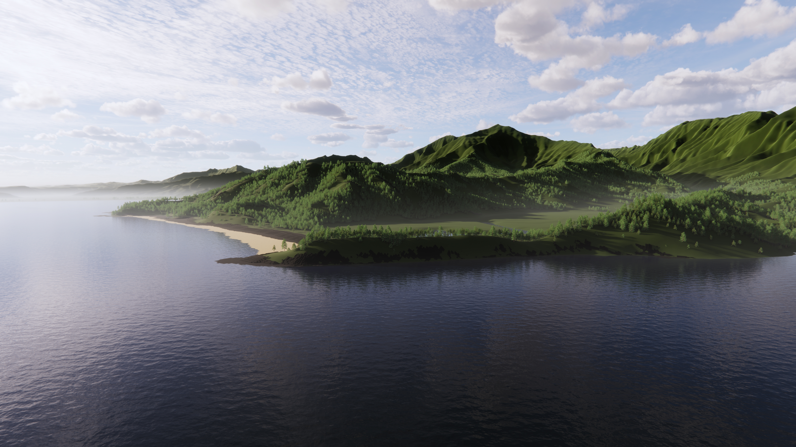
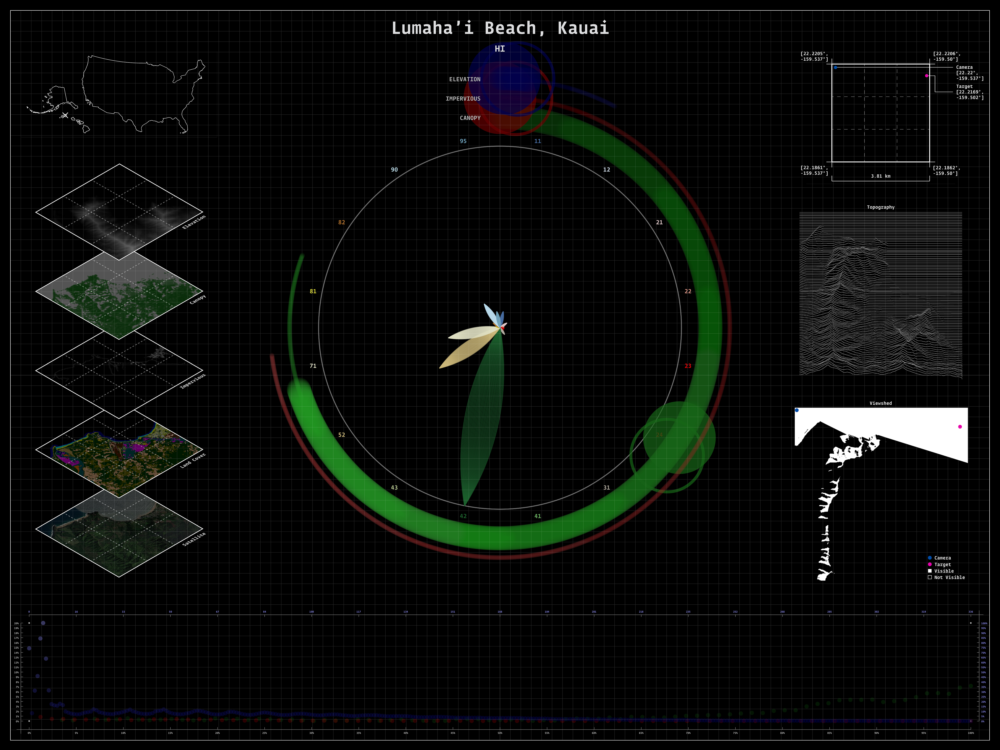
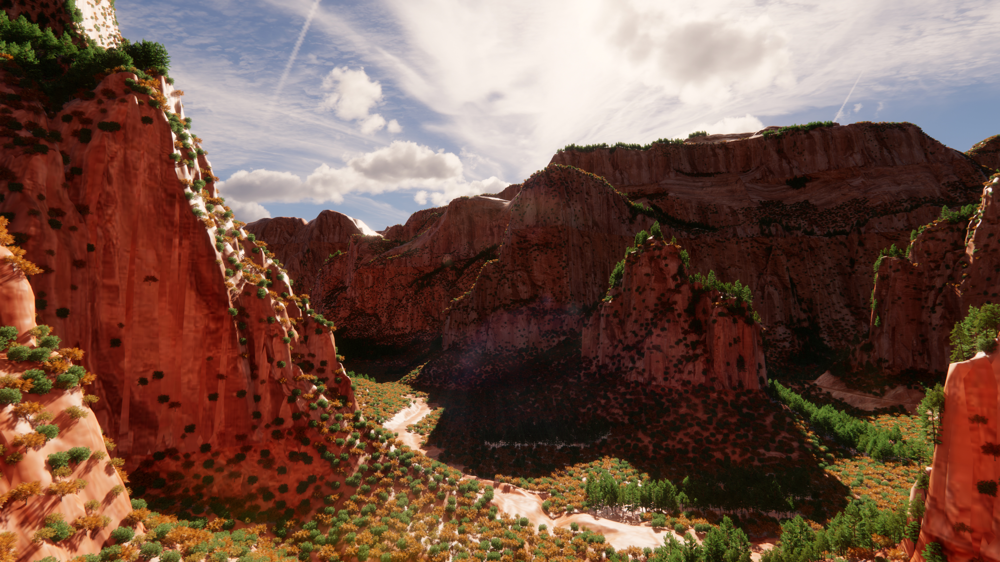
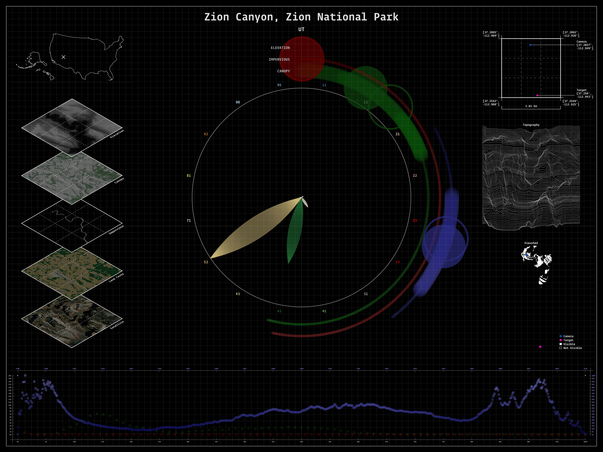
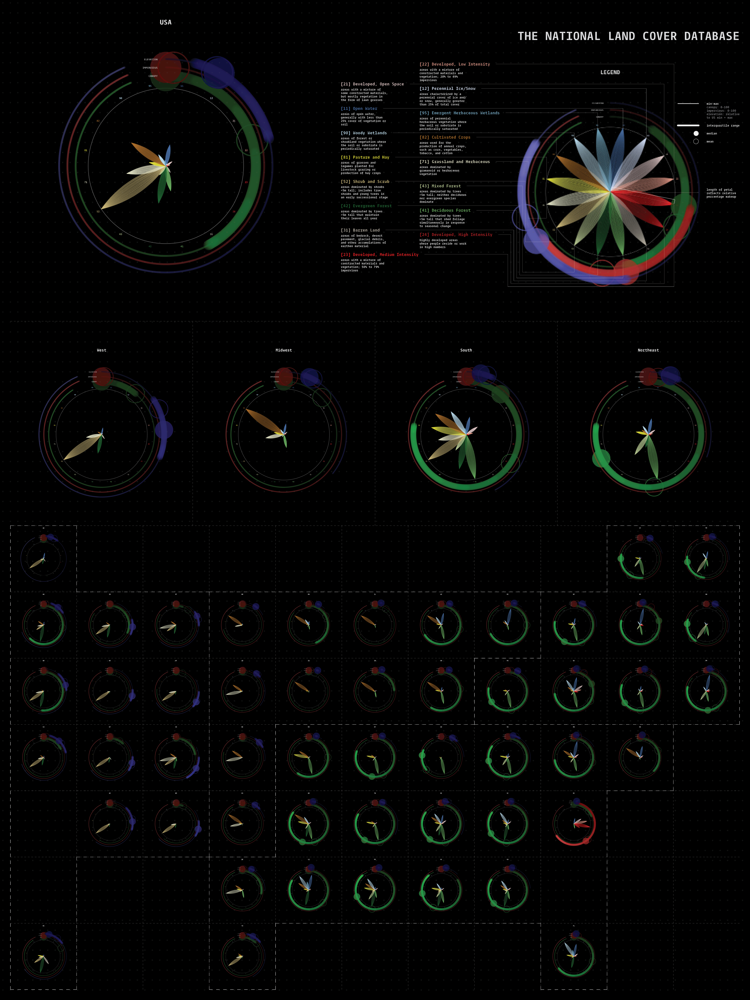
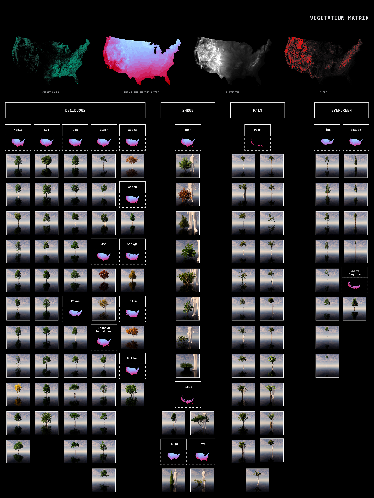
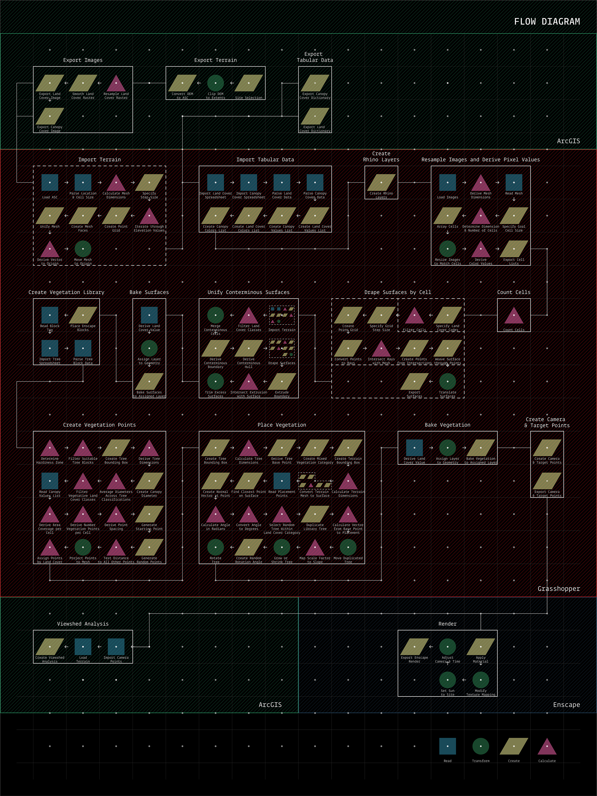